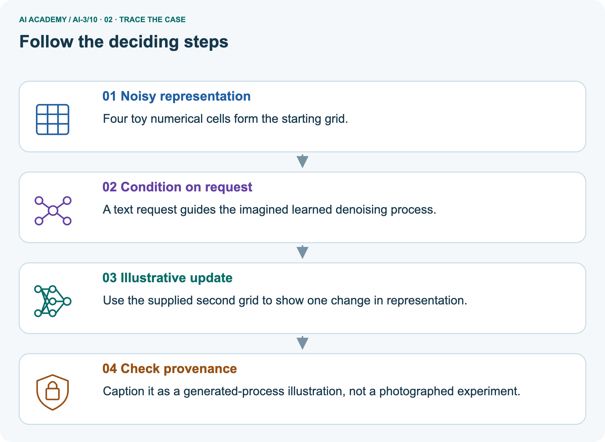
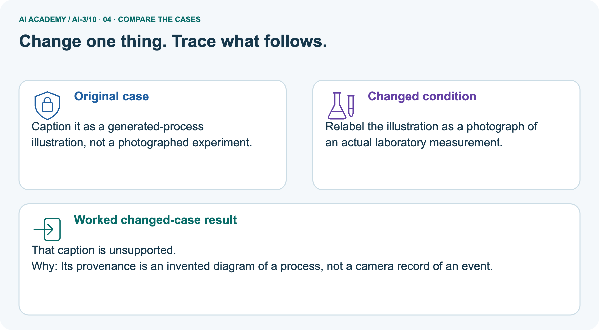
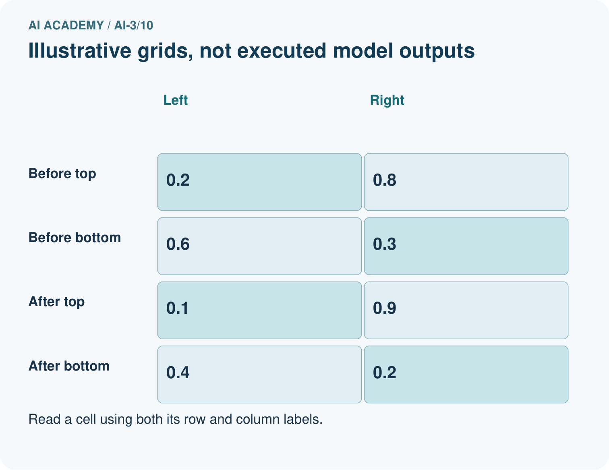
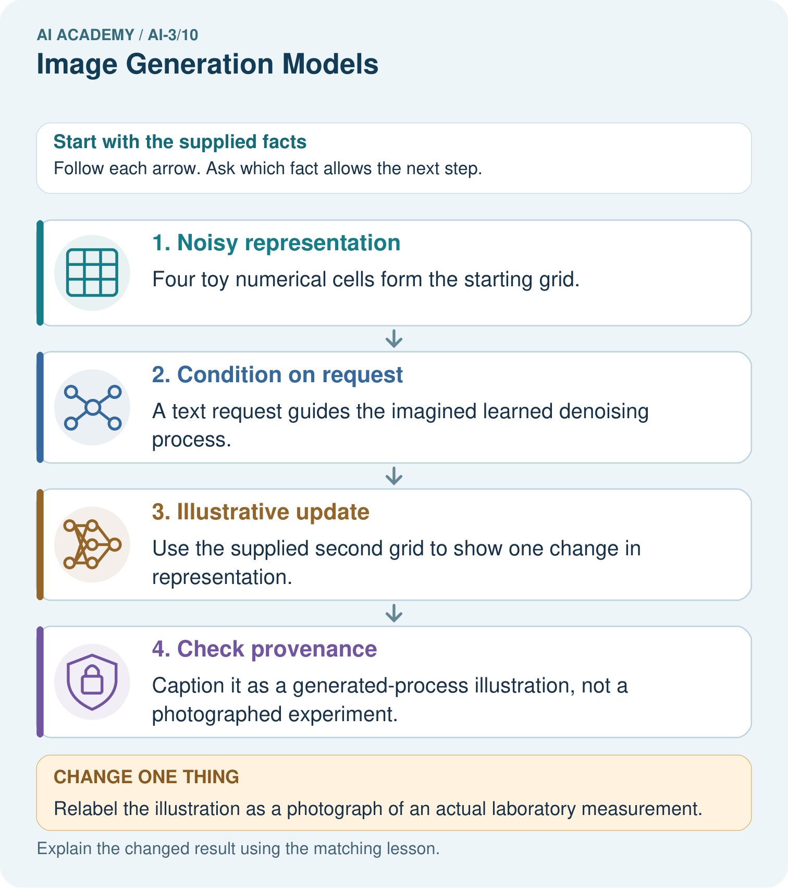
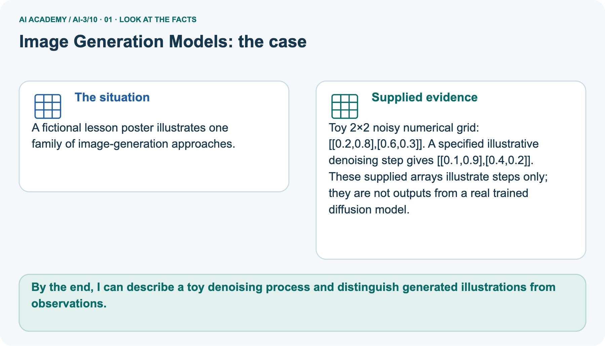
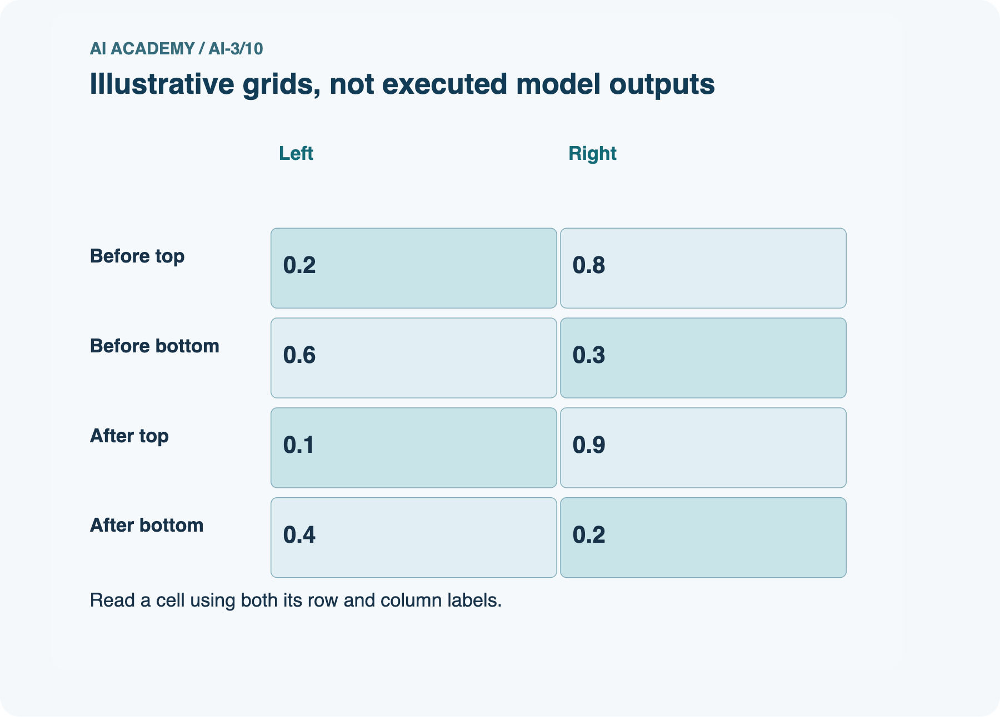
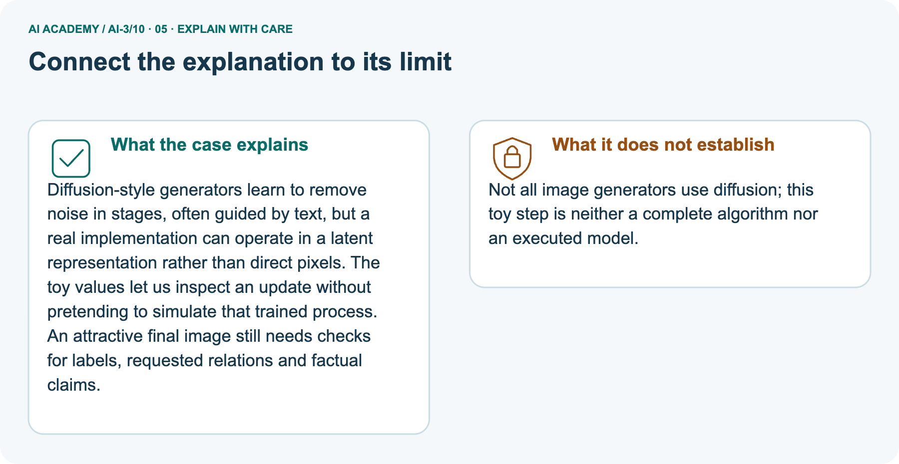
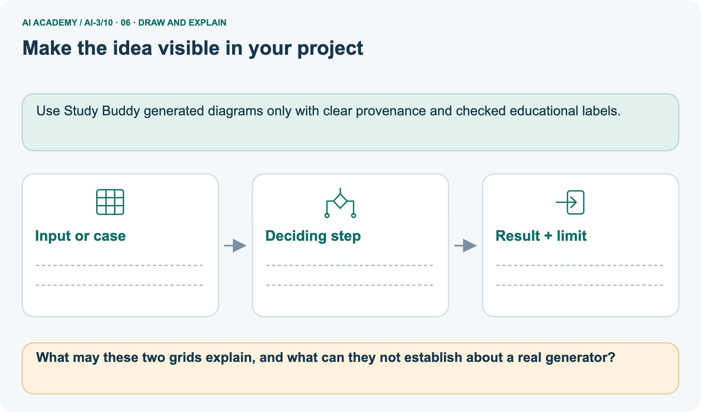

AI Academy · Level 3 · Grade 8 · Week 10 · Student lesson
Image Generation Models
Learn to understand, design, build, test and explain AI systems responsibly.
Project: Verified Study Buddy
THE CONNECTED WEEK
Inspect the process. Check the picture. Bound the claim.
Explain a supplied image-generation illustration while separating visual criteria and event authenticity.
Keep one habit: Origin contract → visible poster → complete grid trace → supplied process cards → independent audit.
Main lesson · Section 1
What does a generated picture show, and what does it prove?
Distinguish a simplified generation mechanism from an observation of an event.
Your learning goals
I can explain the mechanism and terminology of image generation and provenance.
I can apply the stated procedure to a new case with a traceable result.
I can identify an assumption or limitation and design a revealing follow-up.
Recall criteria and evidence
Close your notes first. A rough first answer helps us choose the right starting point; it is not a score for your ability.
Recall Prompt Evaluation: an attractive output must still be checked against explicit criteria. A generated picture also needs an honest record of its origin and of any factual claim made about it.
Your end goal
By the end, I can describe a toy denoising process and distinguish generated illustrations from observations.
Earlier wording, alternatives and picture transcripts
Your learning target
Remember before reading
Without opening the old lesson, explain one key idea from Prompt Evaluation. Give an example and a mistake that the idea helps you avoid.
Without opening the old lesson, explain one key idea from Iterative Prompting. Give an example and a mistake that the idea helps you avoid.
Without opening the old lesson, explain one key idea from Sampling and Variability. Give an example and a mistake that the idea helps you avoid.
After trying, check the relevant lesson or ask your teacher. Change the part of your explanation that the evidence shows was wrong.
Week 10: Image Generation Models
Image generation constructs visual output from learned patterns. Diffusion-style approaches use repeated updates; some operate on latent representations rather than directly on pixels.

CREATOR MISSION
Sequence a simplified noise-to-image card model.
Creator name and date:
Readiness for the connected explanation
This week’s end goal
Main lesson · Section 2
A generator constructs an image; a caption adds a claim
A realistic appearance does not establish that an event occurred.
The generation-versus-observation distinction
An image generator constructs an output from learned patterns and a specification. A generated picture is not a record that the depicted event occurred.
Use supplied classroom illustrations within their scope
Begin by writing the question the procedure is intended to answer. Identify the information already supplied, the information it will produce and the information still missing.
These are constructed classroom examples; they do not require live accounts, private records or an external service. Do not treat a plausible explanation as a measured outcome.
Earlier wording, alternatives and picture transcripts
PICTURE STORY
Notice → Predict → Explain
Begin with visible evidence. Do not explain more than the picture and information support.
MYSTERY
The learners must use image generation models to solve a problem. What information do they have? What decision or calculation do they make? What would count as evidence that it worked?
Three observations (what you can point to):
My prediction and the clue supporting it:
A closer explanation
Main lesson · Section 3
Inspect visible requirements and the production record separately
The constructed poster card makes the counted and labelled failures inspectable.
Record provenance without inventing unknown fields
Keep a provenance record containing specification, tool/version when known, generation date, edits, permissions and intended use. Label fictional imagery.
Inspect visual requirements and avoid inferring identity or event authenticity from appearance.
Read the complete constructed poster card

Keep the criteria and evidence boundary
Before applying the procedure, write its units, denominator or decision boundary where relevant. A partner should be able to repeat each step using the same inputs.
If a required input is absent or violates the stated contract, record that condition explicitly instead of quietly replacing it with a convenient value.
Explain the deciding visible evidence
Point to the input, the deciding step and the result in this week’s visual. Explain the same step in ordinary words. A picture helps when you can say what each part represents.
Earlier wording, alternatives and picture transcripts
VISUAL MECHANISM
Input → Process → Output
Trace the information. At each stage, ask what changed and how you could test it.

↓

↓

Which stage could fail even when the other two are correct? Explain:
A closer explanation
Image generation and provenance — evidence trace
Connect the picture and the explanation
Main lesson · Section 4
Compare a generated illustration with an authenticity claim
Factual claims need evidence beyond the appearance of a picture.
Four pictures with a purpose

Normal case: predict the result and deciding evidence.

Boundary case: identify the exact limit.

Missing information: name what must be clarified.

Transfer case: explain which procedure still applies.
Choose a revealing case
Which case is most likely to reveal a hidden assumption? Why?
Predict the supplied changed case
Change: Relabel the illustration as a photograph of an actual laboratory measurement.
Check after predicting
Prediction: That caption is unsupported.
Reason: Its provenance is an invented diagram of a process, not a camera record of an event.
Earlier wording, alternatives and picture transcripts
CASE GALLERY
Four Tests, Four Kinds of Evidence
A system is not understood until it survives more than one comfortable example.
NORMAL CASE: predict and name evidence. BOUNDARY CASE: predict and name evidence.
MISSING INFORMATION: predict and name evidence. TRANSFER CASE: predict and name evidence.
Change one thing in the pictured case
Main lesson · Section 6
Trace a supplied grid update without pretending to run diffusion
The toy arrays illustrate a representation change, not a trained generator.
Read the two supplied arrays and their scope
A fictional lesson poster illustrates one family of image-generation approaches.
Toy 2×2 noisy numerical grid: [[0.2,0.8],[0.6,0.3]]. A specified illustrative denoising step gives [[0.1,0.9],[0.4,0.2]].
These supplied arrays illustrate steps only; they are not outputs from a real trained diffusion model.
Inspect both complete grids

Trace the imagined conditional update



Read the picture one step at a time
Diffusion-style generators learn to remove noise in stages, often guided by text, but a real implementation can operate in a latent representation rather than direct pixels.
The toy values let us inspect an update without pretending to simulate that trained process. An attractive final image still needs checks for labels, requested relations and factual claims.
State what the arrays cannot establish
The second grid is supplied by the lesson, not calculated by a learned rule shown here. Per-cell changes are -0.1,+0.1,-0.2,-0.1 in row order. No clean target or loss function is supplied, so these values cannot establish that the update reduced error or produced a requested object. Four grayscale cells also do not demonstrate the separate poster’s circle count.
Keep the numerical process illustration and poster-quality audit as distinct cases.
Predict changing only the authenticity caption
Change one thing: Relabel the illustration as a photograph of an actual laboratory measurement. Predict the result before checking the explanation. What remains the same?
Check after predicting



Explain the scope and architecture limit
Not all image generators use diffusion; this toy step is neither a complete algorithm nor an executed model.
Read the labelled picture: What may these two grids explain, and what can they not establish about a real generator?
Earlier wording, alternatives and picture transcripts
WORKED EVIDENCE
Reason Step by Step
Predict first. Then check each step. A correct answer without visible reasoning is incomplete evidence.
Worked evidence for Image Generation Models
1. In this simplified diffusion-style image generator, begin with random visual noise. Other image-generation methods use different procedures.
2. In this simplified account, use a learned estimate to update the noisy representation, with the request providing conditioning. Individual steps need not visibly improve.
3. Learned patterns influence shapes, textures, and relationships.
4. The result is generated, not retrieved evidence of a real event.
Recalculate, retrace, or restate the reasoning in your own representation:
CHECK Did the evidence answer the exact question? Did the total, path, or source record stay consistent?
A closer explanation
A fictional poster requires exactly three labelled circles. Generated image shows four circles and one unreadable label. A caption calls it a photograph of a real lesson.
It fails count and label criteria; the photograph claim is unsupported. Record it as a generated fictional illustration and revise or reject before use.
Compare the intermediate evidence with the final statement. Explain why each number or decision follows from the stated inputs.
The conclusion belongs to this scenario and procedure; changing the inputs, evaluation population or authority can change what it establishes. Retain the raw record so a later revision can be compared honestly.
Learn from the worked case
Cover the result before checking it. Say what is given, choose the procedure, and follow one step at a time. Then uncover the result and explain your first mismatch. Ask why a step is allowed, not only what number it produces.
A pictorial worked case: Image Generation Models
The facts we will use






Why this result follows
What this example does not establish
Main lesson · Section 7
Find an authenticity claim the evidence cannot support
Keep the teaching artifact and the claimed real event separate.
Repair the looks-real argument
Claim to repair: The after grid looks clearer, so it proves the model reconstructed a real scene. The arrays are invented teaching values and no model or target scene is supplied. The poster card is also constructed for this lesson. Both can explain an idea or expose a requirement failure; neither supplies a photograph, measured denoising accuracy or evidence that a depicted classroom event occurred.
Propose a provenance or criterion check
Earlier wording, alternatives and picture transcripts
ERROR DETECTIVE
Compare → Diagnose → Repair
Do not patch the answer. Find the earliest unsupported assumption, wrong step, or weak evidence.

| Evidence record | Expected | Actual | Likely cause / next test |
|---|---|---|---|
| normal case | works | ||
| boundary case | stated rule | ||
| missing input | safe response | ||
| fresh transfer | generalizes |
Repair one cause. Why is this repair better than changing several things?
A closer explanation
Complete the supported workbook tasks before attempting W4 independently. Record any hints or help used. After feedback, use the teacher's fresh retry rather than copying the earlier answer.
For a project, select a relevant new case, predict the outcome from the declared rule and preserve the result alongside any revision.
Main lesson · Section 8
Practise the poster audit with less help
Origin records and factual accuracy answer different questions.
State the provenance limit
Provenance tracks production history; it does not prove the content is accurate or establish every legal permission.
Complete poster W2
Practise with less help: Trace the worked case
Use workbook W2 for the connected example “Image generation and provenance”. First fill the input and rule boxes. Try the middle steps before asking for a hint. After a hint, try the next step yourself.
| Plan | Do | Check |
|---|---|---|
| What is given? Which rule or procedure applies? | Record each intermediate step. | Does the result follow? What remains unknown? |
Repair an all-future-cases claim
Use the worked case for Image generation and provenance. Proposed explanation: “The worked result establishes every future case”. Decide whether this explanation is supported.
Point to the step or supplied fact that decides; explain your repair if needed.
Answer on your own before discussion. If you are unsure, say which step you need help with.
Check your reasoning
Explain the supplied grids and their limit
What may these two grids explain, and what can they not establish about a real generator?
Explain the picture
Reserve the independent diagram audit
This is supported practice. Keep the separately named independent case for an attempt before feedback.
Earlier wording, alternatives and picture transcripts
LOGIC STUDIO
Specify Before You Run
Prompts, schemas, retrieval, tool calls, and code are inspectable parts of one AI product.

SET task, audience, constraints, output_schema LOAD approved_context or retrieval_result CALL model or allowed_tool VALIDATE fields, claims, citations, and safety IF evidence missing: ask, retrieve, or abstain RETURN useful output + source trail + limitations
Trace one input. Which line changes the state or chooses a path?
A closer explanation
A useful check asks what would make the reasoning fail. Distinguish a failure to execute the declared procedure from a weakness in the procedure itself.
The first may require a correction; the second requires an explicitly revised method and new evidence. Preserve unsuccessful cases so an improved result cannot hide the original problem.
Explain your trace to a partner. Your partner points to one step to check. Swap roles on the next case. Each person writes their own explanation.
Main lesson · Section 9
Use complete process cards and a separate visible poster audit
The lesson supplies every card and the candidate image; no generation account is required.
The four process cards
| Teaching card | Supplied content and role |
|---|---|
| K · Condition | Request: a fictional poster with exactly three readable circles A,B,C |
| L · Initial representation | Supplied2×2 grid[[0.2,0.8],[0.6,0.3]],declared noisy for this illustration |
| M · Illustrative update | Supplied second grid[[0.1,0.9],[0.4,0.2]]; no learned update function provided |
| N · Evidence boundary | No final generated poster follows from these arrays; record this as a process illustration |
Trace the partial order and its evidence limit
Process-card investigation: K and L are inputs to the imagined update M, and N records its limits. The request and initial representation need not be placed in an invented single order relative to one another; both must be available for a conditioned update. Inspect the two full grids and describe changes without claiming measured improvement.
This is a conceptual diagram and supplied-array trace, not an implemented diffusion algorithm or observed generator run.
Audit the separate poster and honest production record
Separate poster audit: use the constructed four-circle card and its explicit three-circle A/B/C requirement. Count circles, inspect label completeness/legibility and critique the draft photograph caption independently. Keep a provenance record stating native classroom drawing, no model run, no generator/version or measured generation date available, and the intended teaching use.
Unknown generator fields must remain not supplied. Propose one change to the specification or drawing and its expected check, but do not invent a newly generated output. Exact counts and labels can be constructed with a vector/diagram tool and still require inspection. Keep the separate two-arrow assessment withheld.
Keep the evidence record
| Test / input | Prediction | Actual | Evidence / calculation | Change or keep? |
|---|---|---|---|---|
| normal | ||||
| boundary | ||||
| missing | ||||
| fresh transfer |
What did the hardest test teach you that the normal test did not?
Before trying: what do I expect, and why? While trying: which step could first go wrong? Afterwards: what did I actually observe, and what should change? Keep “not run” if you only traced the procedure.
Earlier wording, alternatives and picture transcripts
EVIDENCE LAB
Predict → Test → Record → Explain
Keep expected and actual results separate. Surprises are useful data when recorded honestly.

Use the supplied process cards, numerical grids and separate constructed poster card. Trace inputs and illustrative update, then check visible counts/labels and provenance. No real generator is run and no final image or denoising-quality measurement follows from the arrays.
Plan → try → check
Main lesson · Section 14
Try alone: audit the fresh two-arrow diagram record
A correct count cannot repair swapped meanings or an unsupported observation claim.
Independent record and scope
A generated diagram requires two arrows and labels input/output. It has two arrows but swapped labels. Metadata records generation, yet the caption says experimental observation. Audit.
Audit the supplied description of the independent diagram. No actual image or camera record is provided, so do not invent geometry or an observed experiment. Treat arrow count, label meaning and the authenticity caption as separate requirements.
Your first attempt and help record
Attempt this case before feedback. Record any help. Earlier examples below are further practice; a case already practised with feedback cannot establish fresh transfer.
Your teacher has the independent answer and scoring criteria. Complete the matching workbook week to keep your practice evidence together.
Use feedback afterwards
Attempt the independent case before hints. Record whether you worked alone, used a hint or followed a model. After feedback, fix the first unsupported step and explain why it changed.
A later check uses a changed case, not a copied answer.
Earlier wording, alternatives and picture transcripts
Independent case: Apply a new case independently
Week 10 Independent application
Close the worked explanation. Apply the idea to this different question without copying.
An image model draws a plant with seven roots after a request for exactly four. What does this show, and where should an exact count diagram be made?
My answer, with a trace, calculation or supporting evidence
Create and test
Change one relevant detail. Predict the result before testing. Include a boundary or missing-information case when it helps reveal a limit.
My changed input and expected result
Connect to your project
Treat generated diagrams as illustrations; pair factual claims with approved sources.
The evidence I will keep
Transfer practice from the original programme
An image generator produces a convincing picture of a school greenhouse on Mars. A student calls it photographic evidence. Explain what the image can and cannot establish.
Use feedback to improve
Main lesson · Section 11
Keep the project’s diagrams honest and checkable
Pair each educational label or factual claim with the evidence it needs.
This week’s concrete contribution
For the Verified Study Buddy, label diagrams as constructed or generated illustrations with the known production steps and edits. Check counts, labels, spatial relations and factual explanations against the actual requirement and approved sources. Keep unknown tool/version fields unknown.
A production record supports the origin claim it documents; it does not verify every depicted fact or create an observation of a fictional scene.
Use Study Buddy generated diagrams only with clear provenance and checked educational labels.
Keep the checkpoint and human choice
THIS WEEK’S CHECKPOINT Treat generated diagrams as illustrations; pair factual claims with approved sources.
SYSTEM MAP Learner need → prompt/schema → approved sources/retrieval → model/tool → structured answer → verification → human decision
What will you add, change, or verify in the project this week?
What should remain under human control?
RESPONSIBLE DESIGN Collect only necessary information. Show uncertainty and limits. Never confuse fluent output with verified truth.
Earlier wording, alternatives and picture transcripts
CUMULATIVE PROJECT
Verified Study Buddy
Every week adds one inspectable piece. The system must show how it reached a result.

Evidence for your project
Main lesson · Section 16
Finish: explain the process illustration and its evidence boundary
A plausible visual is not proof that its scene occurred.
Explain without notes
Close your notes. Explain this goal in your own words: Explain the mechanism and terminology of image generation and provenance
Plan a changed-case return
If you are unsure, return to the worked picture and explain one arrow. If you are ready, change an input or assumption and justify your prediction.
Save your workbook evidence. At the next review, try a different case before opening your old answer.
Reference bank and extra practice
Choose the reference that helps your next step.
Your quick word guide
Reference · Section 5
Your quick word guide
Use the words to explain a particular step, record or limit.
Core vocabulary
| Word | My own example | Not this / boundary |
|---|---|---|
| latent representation | An internal representation learned or constructed by a model rather than directly supplied as the original observation. | |
| noise | Variation or interference that obscures the information relevant to a task. | |
| denoising | Reducing noise in a representation; some generative models learn repeated denoising steps to create outputs. | |
| conditioning | Making a model's output depend on supplied information, such as a prompt or image. |
Terms for the connected explanation
| Word | Meaning |
|---|---|
| Provenance | Recorded origin and transformation history |
| Visual criterion | A stated requirement checked against an image |
| Authenticity claim | A claim about the source or reality of depicted content |
Earlier wording, alternatives and picture transcripts
VOCABULARY LAB
Words You Can Use to Reason
A definition matters when you can recognize the idea, use it, and contrast it with a near-miss.


Words used in the closer explanation
Choose a stronger thinking challenge
Reference · Section 10
Choose a stronger thinking challenge
Choose the next useful challenge rather than treating the whole ladder as compulsory.
Pick your next step
1 • NAME: Define the concept without repeating the textbook.
2 • TRACE: Show the information, state, branch, calculation, or evidence path.
3 • APPLY: Solve a different example independently.
4 • CHALLENGE: Find a boundary case, counterexample, or unfair outcome.
5 • EXPLAIN LIMITS: Say when the result should not be trusted or used alone.
My strongest evidence of independent understanding:
Earlier wording, alternatives and picture transcripts
MASTERY
From Knowing the Word to Owning the Idea
Move upward only when you can produce evidence without copying the worked example.

Reference: check your explanation
Reference · Section 12
Reference: check your explanation
Use after practice. Audit a new diagram independently is the selected independent case.
Check the evidence and its limit
1. My fresh example, trace, calculation, or design:
2. My evidence that it works (include a boundary or missing-data case):
3. One limitation, fairness concern, or situation needing human review:
Self-check and record
SELF-CHECK □ I explained the mechanism □ I used evidence □ I tested a fresh case □ I named a limitation □ I can answer ‘why?’
Earlier wording, alternatives and picture transcripts
INDEPENDENT MASTERY PROOF
Checklist for explaining this week’s idea
Use after practice. Audit a new diagram independently is the selected independent case.

EXPLANATION CHECK Keep count, label meaning, known origin and factual authenticity as separate checks.
Extra practice: A generated image does not document an event
Reference · Section 13
Extra practice: A generated image does not document an event
Try the question before opening its worked explanation.
Read the supplied case and question
A generator creates a realistic fictional bicycle beside a tree.
How does this differ from event photography?
Your explanation
Which detail supports the answer, and why does it matter?
Check after trying
It synthesises an image from learned patterns and instructions; it does not document that event. Many systems denoise iteratively, but architectures vary.
| Evidence or stage | Value or result |
|---|---|
| Brief | Bicycle beside a tree |
| Model | Synthesises visual patterns |
| Image | Fictional scene |
| Check | Content and intended use |
Earlier wording, alternatives and picture transcripts
Week 10 Worked case
Use the supplied details to practise the weekly concept before attempting the independent question. This case extends the illustrated lesson.
The situation
The question
Worked explanation
Explain it in your own words
Trace the supplied case visually
A generated image does not document an event
A generator creates a realistic fictional bicycle beside a tree.
How does this differ from event photography?
It synthesises an image from learned patterns and instructions; it does not document that event. Many systems denoise iteratively, but architectures vary.
Reference: original lesson checklist
Reference · Section 15
Reference: original lesson checklist
Use an additional checklist when it helps inspect your explanation.
Targets and evidence
| By the end, I can | How I will show it |
|---|---|
| Explain the mechanism and terminology of image generation and provenance | Explain the deciding step, show a trace or test, and state one limit. |
| Apply the stated procedure to a new case with a traceable result | Explain the deciding step, show a trace or test, and state one limit. |
| Identify an assumption or limitation and design a revealing follow-up | Explain the deciding step, show a trace or test, and state one limit. |
Keep your route and first prediction
Remember → watch and explain → try with help → investigate → try independently → keep project evidence. Your teacher may spread this lesson across several classes.
Keep your first prediction. Compare it with what the evidence shows and explain any change.
Earlier wording, alternatives and picture transcripts
Start with this question: A fictional lesson poster illustrates one family of image-generation approaches.
Extra practice: pictures, repair and feedback
Reference · Section 17
Extra practice: pictures, repair and feedback
Attempt each question before opening its explanation. Use one browser or paper copy.
First supported question
A fictional lesson poster illustrates one family of image-generation approaches.
Which labelled step matches this detail? Caption it as a generated-process illustration, not a photographed experiment.
1. Noisy representation
2. Condition on request
3. Check provenance
4. Illustrative update
Hint if needed: Read the steps in the pictorial case. Match the supplied detail to the stage that performs or records it.
Practice 1: explain the deciding evidence
Check the first explanation
After your attempt, compare with the supported explanation: Check provenance Caption it as a generated-process illustration, not a photographed experiment.
Diffusion-style generators learn to remove noise in stages, often guided by text, but a real implementation can operate in a latent representation rather than direct pixels.
The toy values let us inspect an update without pretending to simulate that trained process. An attractive final image still needs checks for labels, requested relations and factual claims.
Changed-case question
Changed-case practice: Relabel the illustration as a photograph of an actual laboratory measurement. Which conclusion is supported by the supplied facts?
1. We can decide the result without examining the changed input or the procedure.
2. That caption is unsupported.
3. This one example guarantees correct results for every future input.
Hint if needed: Use the changed condition and the deciding step in the pictorial trace. The answer must say what follows from those facts.
Practice 2: explain the deciding evidence
Check the changed case
After your attempt, compare with the supported explanation: That caption is unsupported. Its provenance is an invented diagram of a process, not a camera record of an event.
Repair and save your work
Review Prompt Evaluation (ai-3/9). Goal: Explain the mechanism and terminology of controlled prompt experiments. Short practice: Why is B’s selection defensible here without calling it universally superior?.
Return to this week and explain what you changed.
Review Iterative Prompting (ai-3/7). Goal: Explain the mechanism and terminology of controlled prompt experiments. Short practice: What evidence supports improvement here, and what remains unproven?.
Return to this week and explain what you changed.
Review Sampling and Variability (ai-3/4). Goal: Sample from a distribution using explicit cumulative intervals. Short practice: Does T=0.5 make B impossible, and does choosing A guarantee factual accuracy?.
Return to this week and explain what you changed.
Use Download completed work in the hosted lesson to export your answers, reflections, practice feedback and code-run evidence. Open the HTML copy to read or print it.
Drafts stay in this browser when storage is available; clear drafts on a shared device.
Earlier wording, alternatives and picture transcripts
Use this supported practice once, in the browser or on paper. Keep the reserved independent assessment for a separate first attempt before teacher feedback.
Repair a missing building block
Keep your completed work
Reference: the six-picture journey
Reference · Section 18
Reference: the six-picture journey
Revisit the picture that serves the current question; key diagrams already sit beside the main explanation.
01. Image Generation Models: the case



A fictional lesson poster illustrates one family of image-generation approaches. Supplied facts: Toy 2×2 noisy numerical grid: [[0.2,0.8],[0.6,0.3]]. A specified illustrative denoising step gives [[0.1,0.9],[0.4,0.2]].
These supplied arrays illustrate steps only; they are not outputs from a real trained diffusion model.
Point to the given fact that matters most. Explain why it matters.
02. Follow the deciding steps
Noisy representation: Four toy numerical cells form the starting grid. → Condition on request: A text request guides the imagined learned denoising process. → Illustrative update: Use the supplied second grid to show one change in representation. → Check provenance: Caption it as a generated-process illustration, not a photographed experiment.
Point to each numbered stage and explain which recorded input it uses.
03. Illustrative grids, not executed model outputs



Illustrative grids, not executed model outputs. Before top: Left = 0.2, Right = 0.8. Before bottom: Left = 0.6, Right = 0.3. After top: Left = 0.1, Right = 0.9. After bottom: Left = 0.4, Right = 0.2.
Read the labels and values. Explain the relationship the model shows.
04. Change one thing. Trace what follows.
Original case: Caption it as a generated-process illustration, not a photographed experiment. Changed condition: Relabel the illustration as a photograph of an actual laboratory measurement.
Expected result: That caption is unsupported. Reason: Its provenance is an invented diagram of a process, not a camera record of an event.
Predict before checking the worked changed-case result. Name what changed and what the supplied facts allow you to conclude.
05. Connect the explanation to its limit



Diffusion-style generators learn to remove noise in stages, often guided by text, but a real implementation can operate in a latent representation rather than direct pixels.
The toy values let us inspect an update without pretending to simulate that trained process. An attractive final image still needs checks for labels, requested relations and factual claims.
Limit: Not all image generators use diffusion; this toy step is neither a complete algorithm nor an executed model.
Explain the case, then point to a limit on the claim.
06. Make the idea visible in your project



Use Study Buddy generated diagrams only with clear provenance and checked educational labels. Draw your input, deciding step, result and limit.
Supported question: What may these two grids explain, and what can they not establish about a real generator?
Draw your project trace and justify the deciding step using evidence.